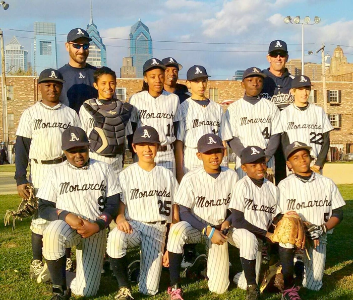
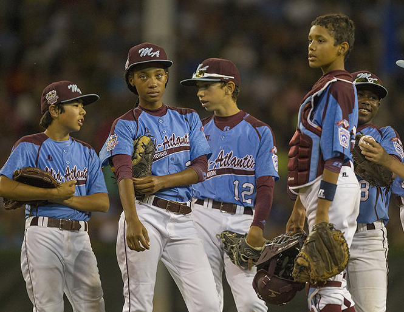
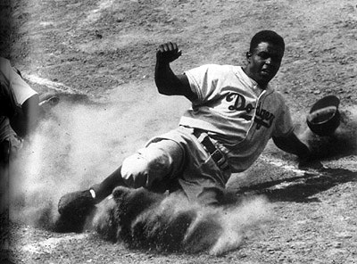
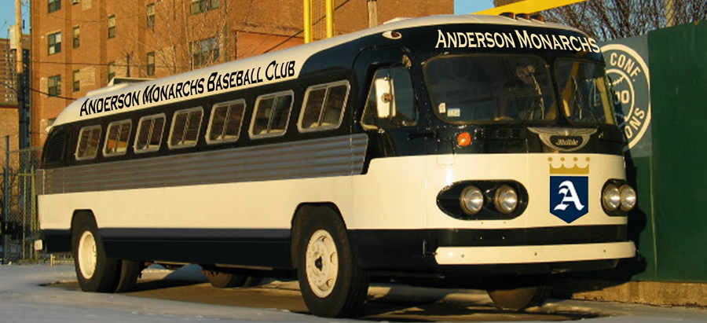
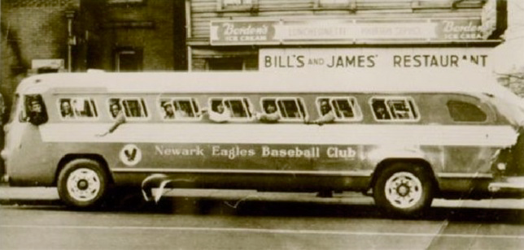

This summer, as a tribute to Jackie Robinson, the Negro Leagues, and the Civil Rights Movement, our 13 year-old Anderson Monarchs will board an authentic 1947 Flxible Clipper touring bus, and embark on a 21-day, 19-city journey – barnstorming their way across America – down through the Deep South, up through the Mid-West, and back east to New York City and, ultimately, back home to Philadelphia – over 4000 miles in all.
The young Monarchs will be getting a first-hand look at the places where the major civil rights events of the 20th century took place. They will meet people who were involved in the Movement, as well as African American ballplayers who played during this era. They’ll also play games against local youth teams in every city and get a chance to make new friends from all around the country.
The young Monarchs will experience, first hand, what life on the road was like for black players in the first half of the 20th century. They’ll be kids in a time capsule travelling back through time. They won’t just be reading about history - they’ll be living it!
Along the way, The Monarchs will play games against local youth teams, meet surviving players from the Negro Leagues, visit historic sites - such as Jackie Robinson's grave site in Brooklyn, Wrigley Field, the Field of Dreams in Iowa, the Negro Leagues Baseball Museum, the Louisville Slugger Museum, the three remaining stadiums in the country which Negro League teams called home, and the National Baseball Hall of Fame in Cooperstown, NY.
The Anderson Monarchs Baseball Club, named after the Kansas City Monarchs, the most famous of Negro League teams, was established in 1995. The teams grew out of the Jackie Robinson Baseball League at the Marian Anderson Recreation Center in South Philadelphia. As the only predominantly African American club to compete in the best leagues and tournaments in the area, the Monarchs have, like Jackie Robinson, broken down barriers and shattered stereotypes wherever they’ve competed.
This current 13U Monarchs team features seven members of the 2014 Taney Little League team that captured the hearts and imaginations of people from all over, at last summer’s Little League World Series, in Williamsport, PA.
The kids train year-round at the Marian Anderson Recreation Center in South Philadelphia. The majority of the players have been together since the age of six, and also play travel basketball and soccer together.They are living, shining examples of what is possible, both athletically and academically, when inner city kids are afforded opportunities to succeed.
For decades African Americans, shut out of the major leagues, formed and played in their own leagues – the Negro Leagues. In the off- season, players from the Negro leagues often boarded buses and “barnstormed” their way around the country, playing games against town teams, as well as Major League players. It was a tough way to live but a way to make a living playing the game they loved. The high level of play and the success these players enjoyed were what paved the way for Jackie Robinson’s historic accomplishment.
April 15, 1947 – Jackie Robinson takes the field for the Brooklyn Dodgers and becomes the first African American to play Major League baseball in the 20th century, opening the door for future generations to pursue their dreams.
We are proud of the work we do and feel that it benefits not just the youth and families we serve, but the community as a whole. By providing quality recreation options we give children alternatives to the streets. By providing guidance and mentoring we empower children to make smart, healthy decisions. By providing academic support and college prep work, we help ensure that our participants are equipped to make a positive impact on others. All of this means a healthier, more livable community for everyone.
Once Jackie Robinson integrated America's pastime, African Americans demanded equal rights in other areas of society. From education, to voting rights, to better-paying jobs, to equal access to public spaces, people risked everything to create a better country for future generations.
The modern Civil Rights Era is an incredibly important and pivotal chapter in our history. It is extremely important that our young people understand what previous generations sacrificed to create a better world for us all.
The civil rights movement is one of the defining events in American history, providing a bracing example of Americans fighting for the ideals of justice and equality. When students learn about the movement, they learn what it means to be an active American citizen. They learn how to recognize injustice. They learn about the role of individuals, as well as the importance of organization. And they see that people can come together to stand against oppression.
Students also need to know that the movement existed independently of its most notable leaders, and that thousands of young people, black and white, mustered the courage to join the struggle, very often risking their lives.
They need to realize that, although progress has been made, the nation is not yet perfect and that racism and injustice still exist.
We have a civic and moral imperative to ensure that all children learn about the history of the civil rights movement. They need to actively learn what older generations lived through and experienced as a strong part of their cultural surroundings.
To make the experience even more authentic, the Anderson Monarchs will be traveling in their 1947 Flxible Clipper touring bus (the same year that Jackie Robinson broke the color barrier in Major League Baseball). And just like 1947, there will be NO electronics (cell phones, video games, laptops, etc.) on the bus.
 | Wed Jun 17th | Philadelphia,PA |
| Thu Jun 18th | Washington, DC |
| Fri Jun 19th | Washington, DC |
| Sat Jun 20th | Richmond, Virigina |
| Sun Jun 21st | Durham, NC |
| Mon Jun 22nd | Columbia/Spartanburg, SC |
| Tues Jun 23rd | Atlanta, GA |
| Wed Jun 24th | Birmingham, AL |
| Thurs Jun 25th | Montgomery, AL |
| Friday Jun 26th | Selma, AL |
| Saturday Jun 27th | Jackson, Ms |
| Sunday Jun 28th | Little Rock, AK |
| Monday Jun 29th | Memphis, TN |
| Tuesday Jun 30th | St. Louis/Ferguson, MO |
| Wednesday July 1st | Louisville, KY |
| Thursday July 2nd | Cincinnati, OH |
| Friday July 3rd | Columbus, OH |
| Saturday July 4th | Pittsburgh, PA |
| Sunday July 5th | Williamsport, PA |
| Monday July 6th | New York, NY |
| Tuesday July 7th | New York, NY |
| Wednesday July 8th | Secaucus, NJ/Philadelphia, PA |